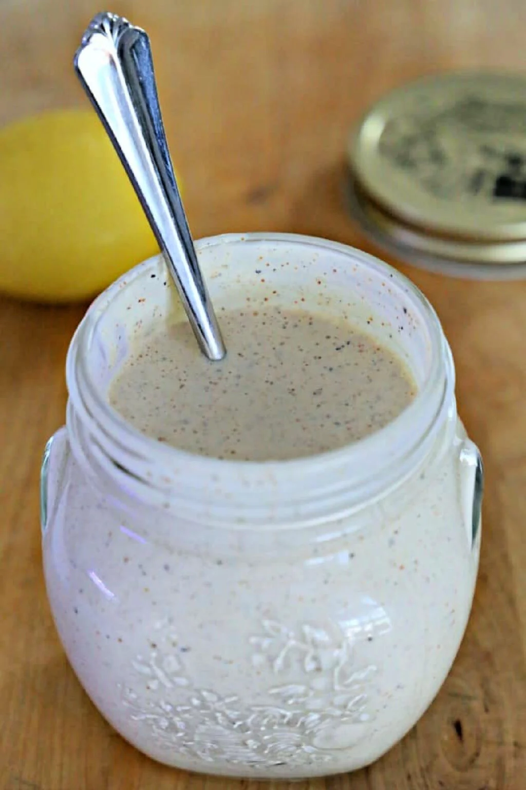

Alabama White Sauce

Description
The tangy goodness of mayonnaise combined with apple cider vinegar and spices enhances everything
that Alabama White Sauce is put on from chicken to seafood to turkey and everything in between.
Ingredients
- 2 cups mayonnaise
- ½ cup apple cider vinegar
- 2 Tablespoons lemon juice
- 1 Tablespoon Worcestershire sauce
- 2 teaspoons ground black pepper
- 1 teaspoon salt
- 1 teaspoon cayenne pepper
- 1 to 2 teaspoons horseradish
Directions
-
Combine all of the ingredients in a bowl, cover, and chill before serving. You can add additional
apple cider vinegar for a thinner sauce with a bit more bite.